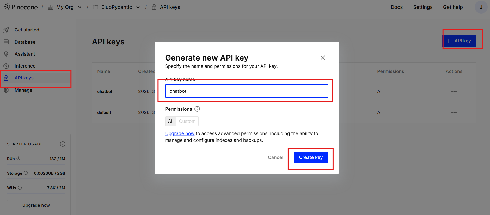
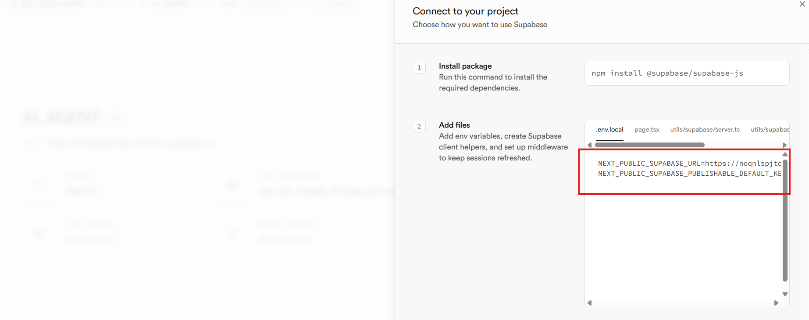
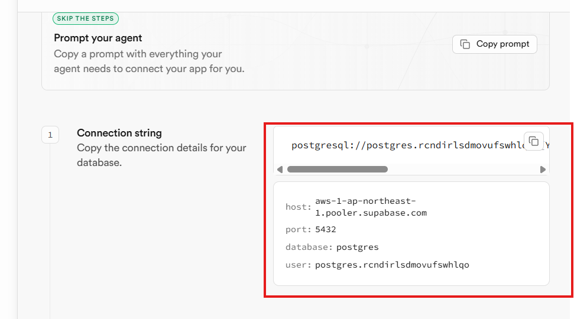

프로젝트 마이그레이션 가이드
이 문서는 프로젝트를 다른 사용자의 GitHub 저장소로 완전히 이전하는 절차를 설명합니다.
각 단계는 직접 해야 할 일과 Claude Code(프롬프트)에 요청할 일로 구분되어 있습니다.
직접 할 일
프롬프트 요청
직접 + 프롬프트
1
Git 저장소 이전
직접 할 일
- GitHub에서 빈 repo 생성
- 터미널에서 아래 명령어 실행:
bashgit clone https://github.com/jaerinjaerin/agent-with-pydanticai.git
cd agent-with-pydanticai
git remote remove origin
git remote add origin https://github.com/<새사용자>/<새repo이름>.git
git push -u origin main
2
환경변수 발급 및 설정
직접 할 일
.env.example을 .env로 복사하고, 아래 순서대로 각 서비스의 API 키를 발급받아 입력합니다.
2-1. ANTHROPIC_API_KEY
- Anthropic Console 접속 및 회원가입/로그인
- API Keys → Create Key → 키 복사
.env의ANTHROPIC_API_KEY에 붙여넣기
2-2. PINECONE_API_KEY
- Pinecone Console 접속 및 회원가입/로그인
- 프로젝트 선택 → 좌측 API Keys 클릭
- + API key 클릭 → 이름 입력 → Create key 클릭
- 키를 즉시 복사하여
.env에 저장

생성 창을 닫으면 키를 다시 확인할 수 없으므로 반드시 바로 복사할 것.
2-3. Supabase 프로젝트 생성 및 키 발급
- Supabase 접속 및 회원가입/로그인
- Dashboard에서 New Project 클릭
- Organization 선택 → 프로젝트 이름, DB 비밀번호, Region 설정 → Create new project
- 프로젝트 생성 완료 후 URL 클릭

아래 두 값을 .env에 복사:
- Project URL →
NEXT_PUBLIC_SUPABASE_URL - anon / public →
NEXT_PUBLIC_SUPABASE_PUBLISHABLE_DEFAULT_KEY
2-4. GEMINI_API_KEY (선택)
Gemini 임베딩은 Supabase 벡터 검색(대체 백엔드)에서만 사용됩니다. 주 검색(Pinecone)만 사용할 경우 발급하지 않아도 됩니다.
- Google AI Studio — API Keys 접속 및 Google 계정 로그인
- 최초 접속 시 이용약관 동의 → 기본 API 키가 자동 생성됨
- 키를 복사하여
.env의GEMINI_API_KEY에 저장
3
의존성 설치
프롬프트 요청
pip install -r requirements.txt 실행해줘
4
Claude Code에 Supabase MCP 연결
프롬프트 요청
데이터베이스 테이블 목록을 보여줘
연결이 정상이면 테이블 목록이 표시됩니다.
5
Supabase DB 스키마 적용 + 데이터 입력
두 가지 방법 중 택 1:
방법 A: backup.sql로 한번에 복원 (권장)
직접 할 일
- Supabase Dashboard → Connect 클릭
- Direct → Connection Method: Session pooler 선택

- Connection string (URI)을 복사

- 터미널에서 아래 명령어 실행 (URI의
[YOUR-PASSWORD]를 DB 비밀번호로 교체):
bashpsql "postgresql://postgres.<project-ref>:<비밀번호>@aws-0-<region>.pooler.supabase.com:5432/postgres" < backup.sql
backup.sql에 스키마 + 문서 데이터가 모두 포함되어 있습니다.방법 B: MCP로 단계별 적용 (psql 없을 때)
프롬프트 요청
supabase/migrations/001_init.sql 파일을 실행해줘
테이블 4개, 인덱스, hybrid_search RPC 함수가 생성됩니다.
그 다음:
python scripts/migrate_to_supabase.py 실행해줘
data/ 폴더의 JSON 파일이 Supabase documents 테이블에 입력됩니다.
6
Supabase Storage 이미지 복원
직접 할 일
- Supabase Dashboard → Storage → New Bucket
- 이름:
doc-images, Public bucket: ON
프롬프트 요청
data/storage_backup/doc-images 폴더의 파일들을 Supabase Storage doc-images 버킷에 업로드해줘
게시판 인라인 이미지 23개가 업로드됩니다.
7
Pinecone 인덱스 생성 및 데이터 복원
직접 할 일
Pinecone Console에서 Integrated Index 생성:
- Create Index 클릭
- Index name:
eluocnc-faq-v2 - Setup: Integrated 선택
- Embedding model:
multilingual-e5-large - Cloud:
aws, Region:us-east-1
프롬프트 요청
data/pinecone_export.json 데이터를 Pinecone eluocnc-faq-v2 인덱스에 업로드해줘
또는 아래 스크립트를 직접 실행:
pythonimport json
from pinecone import Pinecone
pc = Pinecone(api_key="<새-PINECONE_API_KEY>")
index = pc.Index("eluocnc-faq-v2")
with open("data/pinecone_export.json", "r") as f:
records = json.load(f)
batch_size = 100
for i in range(0, len(records), batch_size):
batch = records[i:i+batch_size]
index.upsert_records(
namespace="__default__",
records=[{"_id": r["id"], **r["metadata"]} for r in batch]
)
print(f"Uploaded {min(i+batch_size, len(records))}/{len(records)}")
print("Done!")
8
Streamlit Cloud 배포
직접 할 일
- Streamlit Cloud에서 로그인 (GitHub 계정)
- New app → GitHub repo 연결
- Main file:
src/app.py - Advanced settings → Secrets에 환경변수 추가
TOML 형식이므로 값을 반드시 따옴표로 감쌀 것!
tomlANTHROPIC_API_KEY = "sk-ant-..."
PINECONE_API_KEY = "pcsk_..."
GEMINI_API_KEY = "AI..."
NEXT_PUBLIC_SUPABASE_URL = "https://xxxx.supabase.co"
NEXT_PUBLIC_SUPABASE_PUBLISHABLE_DEFAULT_KEY = "eyJ..."
9
동작 확인
직접 할 일
bash# 로컬 테스트
streamlit run src/app.py
또는 Streamlit Cloud 배포 URL에서 채팅 테스트.
체크리스트
| # | 작업 | 유형 | 완료 |
|---|---|---|---|
| 1 | GitHub에 빈 repo 생성 + push | 직접 | |
| 2 | .env 파일에 모든 API 키 설정 |
직접 | |
| 3 | pip install -r requirements.txt |
프롬프트 | |
| 4 | Supabase MCP 연결 확인 | 직접+프롬프트 | |
| 5 | Supabase DB 스키마 적용 (001_init.sql) |
프롬프트 | |
| 6 | Supabase 문서 데이터 입력 (migrate_to_supabase.py) |
프롬프트 | |
| 7 | Supabase Storage doc-images 버킷 생성 + 이미지 업로드 |
직접+프롬프트 | |
| 8 | Pinecone Index 생성 (Console) | 직접 | |
| 9 | Pinecone 데이터 업로드 (pinecone_export.json) |
프롬프트 | |
| 10 | Streamlit Cloud 배포 + Secrets 설정 | 직접 | |
| 11 | 챗봇 정상 동작 확인 | 직접 |